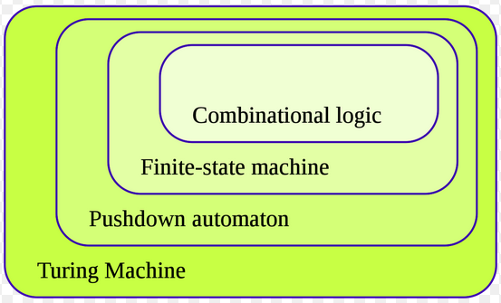
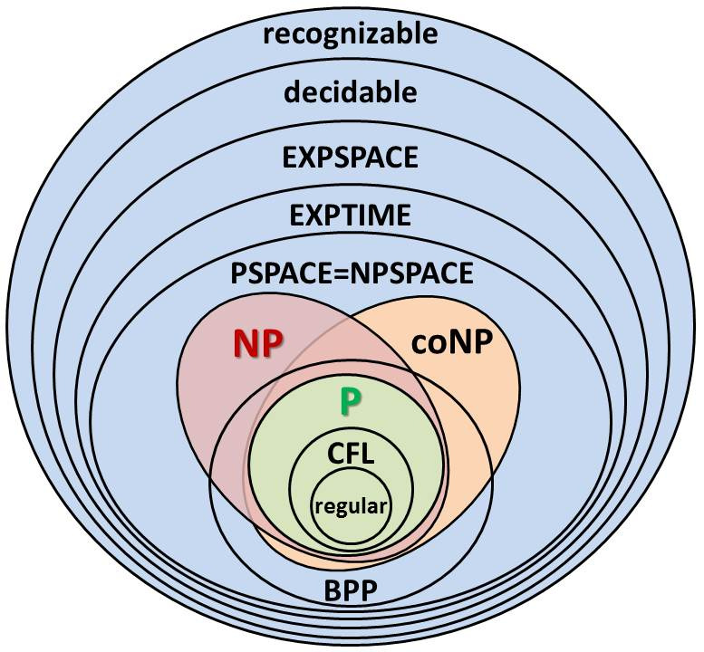

Basic Building Blocks of Quantum Computer
Computer

Computational Complexity Theory

Quantum Computational Complexity Theory
Realization of a Computer
Realization of a Quantum Computer
Superconducting Qubit Model
Superconducting Qubit Model Properties
Trapped Ion Qubit Model
Trapped Ion Qubit Model Properties
NMR Qubit Model
NMR Qubit Model Properties
LOQC Qubit Model (Photons as information carriers)
LOQC Qubit Model Properties
Hybrid Appraoch
Quantum Noise
Topological Qubits
Topology
Torus

Resilient against errors due to their topological nature
Let's Build Abstractions
Grover's Algorithm
Shor's Algorithm

Deutsch-Jozsa Algorithm

Jordan Gradient Estimation Algorithm
Quantum Machine Learning